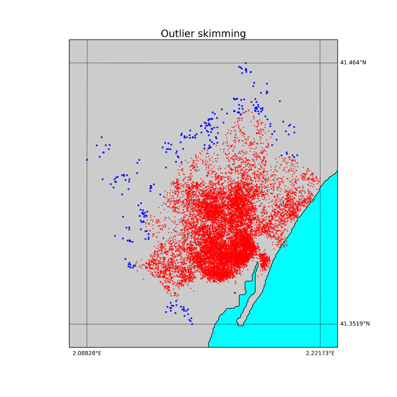

Outliers
The treatment of outliers has been mainly devoted to finding and removing outliers based on their geo-localization and on their price.
In the following sections we will see how we removed outliers based on their location, which criteria we decided to apply to the outlier treatment, and how we removed the outliers based on their price.
Motivation for skimming geographic outliers
We assume that data entries that are very far away from the rest of the dataset will have characteristics and prices that do not reflect the market of the city we are considering, so we want to filter very isolated points, as the ones that are one the outskirts of the map.
Results
We proceed to find and remove the outliers based on the median distance of each entry to its 25 first neighbors. If such distance is larger than a control distance dc the data point is considered as an outlier. The control distance dc depends on the distance distribution of the particular city considered, and on some threshold parameters that we will discuss more in detail in the next sections. For the Barcelona dataset dc was 355 m, the median distance to the neighbors 72 m, and the error on the median 35 m (MAD, median absolute deviation, explained in detail in the section CRITERIA TO DETECT OUTLIERS).
In the following picture we plot the histograms (in log scale) of the distribution of the median distances of each entry to its 25 neighbors before and after the outlier removal treatment.
In the map below, the points selected as outliers are plotted in blue, while the data points we keep are plotted in red.
Choice of the neighbor number
We consider the neighbor number a hyperparameter that can be tuned. We therefore choose the number of neighbors to consider in order to compute the median distance of each point to the others according to the best score of the final regressor. A neighbor number of 25 gave the best score for Barcelona, but of course this parameter should be tuned according to the specific geography when applying this method to another city.
Below we show the maps of the outliers and “good data” obtained using the same procedure with neighbor number 5 and 100, respectively.
We observe that choosing a neighbor number of 100.
The way we chose to detect the outliers was to rely on the median and on the median absolute deviation, MAD, i.e. an error calculated on the median. Indeed, considering MAD and median is generally more robust than looking at mean and standard deviation when treating outliers (see Leys et al., 2013 and references therein). The MAD is defined as follows:
In general, we consider "good data" those data whose value x falls in the interval:
where m is the median, and t a threshold parameter.
Choice of the threshold
Setting the value t to 8 seemed a good choice for 3 reasons: 1) With this value both in the case of the geographic outliers and for the price outliers the distribution of data lost the "tails" but without losing a great amount of data. 2) This value gave good final score of the regressor. 3) If the distribution of distances was gaussian a threshold of 8 would result in cutting above 5 sigma (when appropriate multiplicative parameters are considered).
Special cases: asymmetric distributions
Both in the case of the geographic outliers that we saw in the previous section and in the case of the price outliers that we will see in the next section, the data distribution is asymmetric.
We take this into account computing the MAD separately for the data above and below the median, thus obtaining a MADlow and a MADhigh value.
For the geographic outliers we want to discard only the data with a very high distance to the others, so we consider good data those data whose value x is lower than a control distance dc, that is defined as follows:
For the price outliers instead, we want to make sure to discard both too high and too low values, so our criteria of selection of good data becomes:
For more details, see also:
Leys, C., et al., Detecting outliers: Do not use standard deviation around the mean, use absolute deviation around the median, Journal of Experimental Social Psychology, Volume 49, Issue 4, July 2013, pp. 764–766.
https://getpocket.com/a/read/821937616
The price value of the raw data has a very large range, as it is shown in the figure below. In this section we want to find and remove price outliers in order to be able to properly train our regressor.
Separating the three property type categories
In order to remove the outliers in the price feature, we should conisder the fact that the apartments are divided into three different property types: entire apartment, private room or shared room. This means that we should separate the three populations in order to apply any statistical analysis to find the outliers.
The values of median and lower and higher MAD found for the three categories are shown in the following table.
| PRICES | Entire apt | Private room | Shared room |
|---|---|---|---|
| median | 125 | 39 | 22 |
| (MADlow, MADhigh) | (30,45) | (10,13) | (3,13) |
Results
Applying the criteria described in the previous section we obtain the following distributions for the raw (plotted at the top) and cleaned data (plotted at the bottom).
The number of outliers removed was 102 for the entire apartment category, 79 for the private room category and 4 for the shared room category.